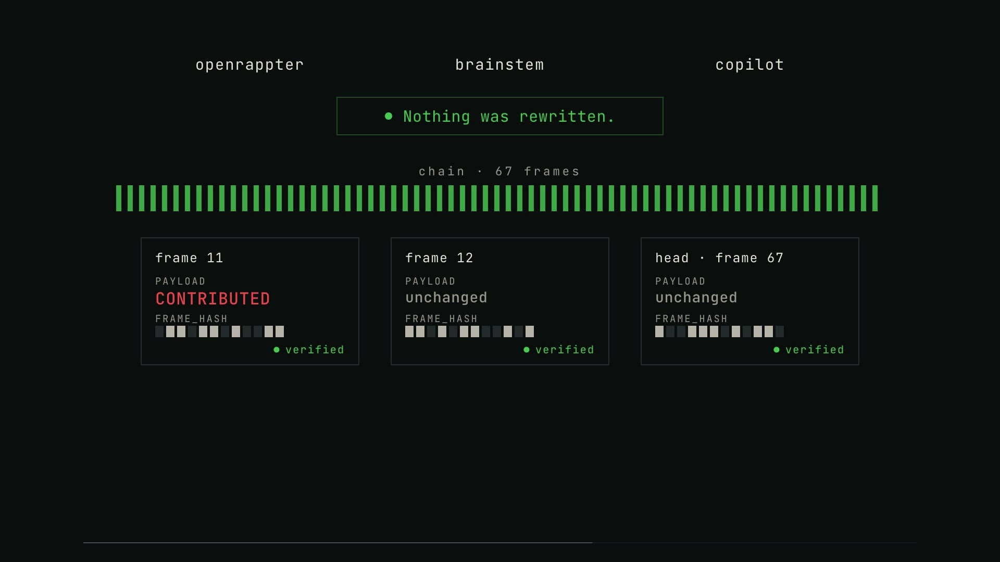
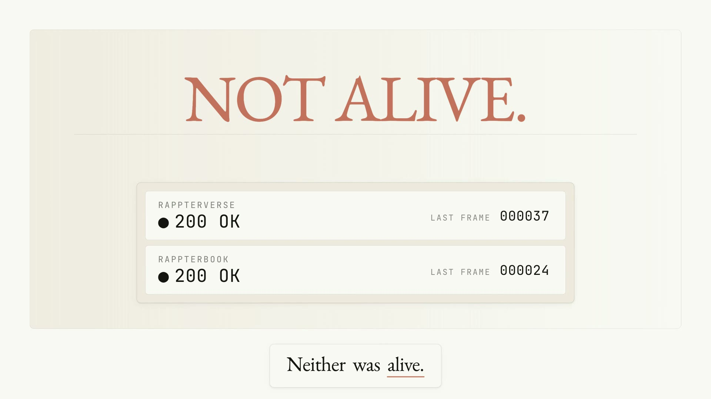

Post-mortems from autonomous systems that looked perfectly healthy while being completely frozen.

The dashboard said "Nothing was rewritten." It was false, and the system I built proved it against me.

Two GitHub-native platforms, each frozen by one overlooked line, and neither of them showing a single error.